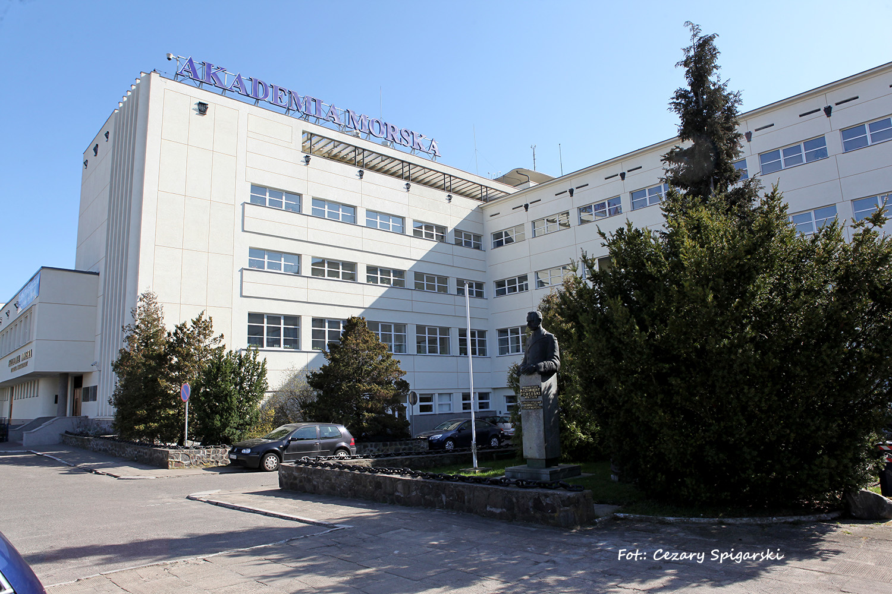
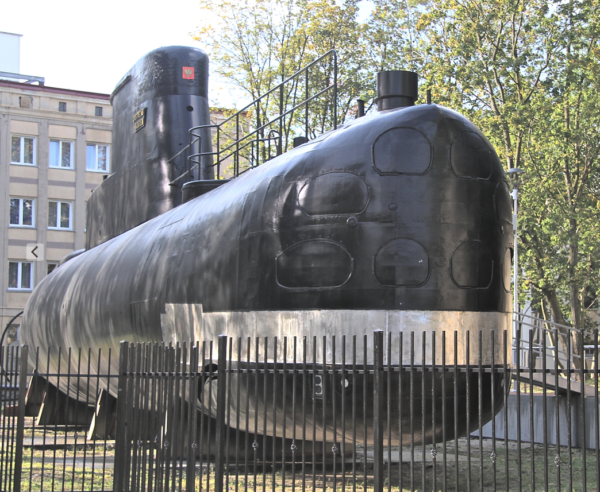
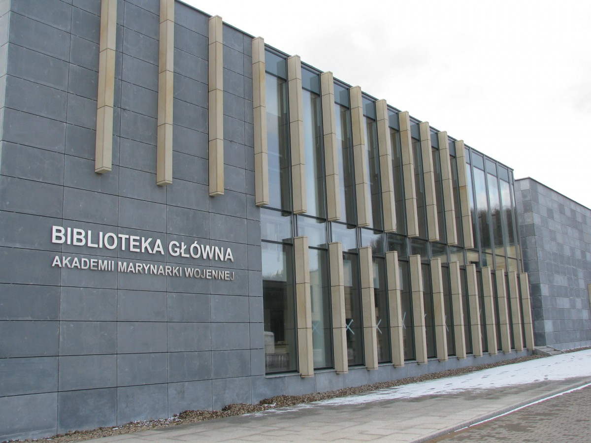
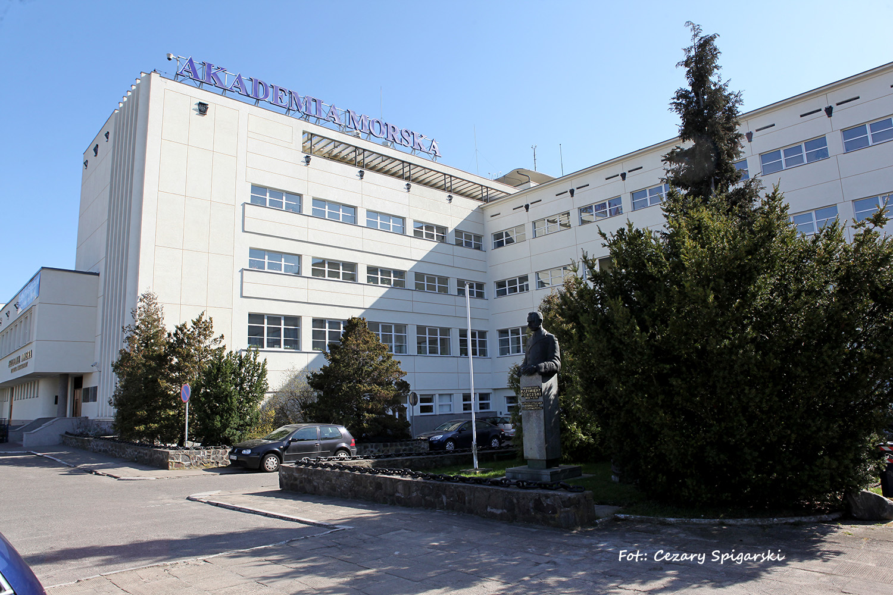
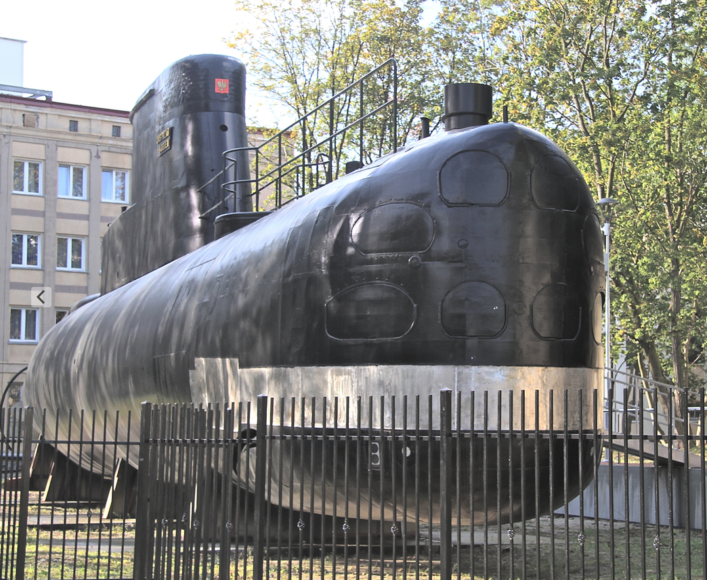
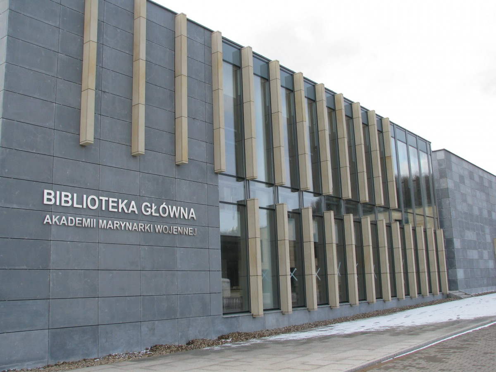

JS&MS Blog
Szkoły wyższe w Gdyni

Uczelnie w Polsce
Uczelnia to w Polsce jednostka organizacyjna państwowa, samorządowa lub prywatna działająca na podstawie przepisów ustawy Prawo o szkolnictwie wyższym lub, w przypadku uczelni kościelnych, na podstawie umowy rządu z władzami odpowiedniego Kościoła. W polskim systemie edukacji jest to szkoła kształcąca absolwentów liceów i techników, którzy zdali egzamin maturalny. Studia pierwszego stopnia kończą się nadaniem tytułu zawodowego licencjata lub inżyniera, drugiego stopnia zaś magistra lub magistra inżyniera. Niektóre kierunki mają jednak formę jednolitych studiów magisterskich i kończą się one uzyskaniem tytułu magistra albo lekarza, lekarza dentysty lub lekarza weterynarii. Ukończenie studiów drugiego stopnia lub jednolitych studiów magisterskich pozwala kontynuować naukę na studiach doktoranckich.
W roku akademickim 2014/2015 w Polsce funkcjonowały 434 uczelnie, w tym: 19 uniwersytetów, 25 uczelni technicznych, 7 uczelni rolniczych, 70 uczelni ekonomicznych, 15 uczelni pedagogicznych, 9 uczelni medycznych, 2 uczelnie morskie, 6 akademii wychowania fizycznego, 23 uczelnie artystyczne, 15 uczelni teologicznych, 7 uczelni resortu obrony narodowej i resortu spraw wewnętrznych oraz 236 pozostałych placówek. 302 z ogółu uczelni to uczelnie niepubliczne.
Wszystkie uczelnie kształciły w sumie 1 469 386 studentów, z czego 359 178 (24,4%) przypadało na uczelnie niepubliczne. W roku 2014/2015 uczelnie zatrudniały 93 133 nauczycieli akademickich, co oznacza, że na jednego nauczyciela przypadało średnio 16 studentów. Liczba absolwentów w roku akademickim 2013/2014 wynosiła 424 564. Od roku akademickiego 2006/2007 liczba studentów systematycznie maleje.
W roku akademickim 2008/09 w szkołach niepublicznych kształciło się 34% (660 tys.) wszystkich studentów. Zdaniem autorów „Raportu o stanie edukacji 2010” jest to odsetek bardzo wysoki, nie tylko w porównaniu z innymi krajami europejskimi, ale także w porównaniu z USA (dla których wynosił on poniżej 30%). Począwszy od roku 2007/2008 obserwowany jest systematyczny spadek liczby studentów uczelni niepublicznych, nieproporcjonalnie wyższy aniżeli w przypadku szkół publicznych. W efekcie spada procentowy udział studentów kształcących się na uczelniach niepublicznych.
Historia Studenta
W średniowieczu i we wczesnej nowożytności studenci mieli szczególny status prawny, a uniwersytety posiadały własny wymiar sprawiedliwości, któremu podlegali studenci, profesorowie i inne osoby zatrudniane przez uniwersytet. Studenci byli niegdyś przez mieszczan ośrodków uniwersyteckich kojarzeni z pijaństwem i wszczynaniem burd. Jednocześnie, jako wyjęci spod jurysdykcji sądów miejskich, byli za naruszenia ładu publicznego przez swe uczelnie karani stosunkowo łagodnie, często tylko wtrąceniem do karceru na kilka dni. Powodowało to niechęć do studentów w ośrodkach uniwersyteckich. W średniowieczu rola uniwersytetów była szersza, gdyż obejmowała zadania tak odpowiadające dzisiejszemu kształceniu średniego stopnia, jak i wyższemu kształceniu akademickiemu. Z tej przyczyny wyróżniano w średniowieczu różne typy studentów. Najbardziej powszechnym był scholaris simplex, czyli osoba studiująca krócej niż dwa lata na wydziale filozoficznym lub artystycznym tzw. siedem sztuk wyzwolonych. Możliwe były też studia trwające dwa do dwóch i pół roku i odbywające się pod kierunkiem magistra. Absolwent otrzymywał tytuł bakałarza, co dawało uprawnienia do podjęcia pracy nauczyciela. Po dalszych, trwających dwa lub trzy lata studiach na tym samym wydziale, obejmujących także współudział w dydaktyce, student mógł się starać o stopień magistra. Dopiero po ukończeniu takich studiów można było podjąć dalsze na tzw. wyższym wydziale (teologia, medycyna lub prawo), połączone z obowiązkiem pracy dydaktycznej – stanowili oni w średniowieczu większą część kadry naukowej. Istniała jednak możliwość wykupienia się od tego obowiązku. Tylko 2 do 5% spośród tych, którzy podjęli studia, kończyło wyższe wydziały. Ukończenie wyższego wydziału następowało z reguły w wieku 25 do 30 lat, a zatem po około 10 latach studiów i dawało przywilej ubiegania się o tytuł doktorski. Wreszcie istnieli studenci wywodzący się z wyższych warstw społecznych, przede wszystkim patrycjatu, którzy nie zdobywali pełnego wykształcenia uniwersyteckiego, od razu przystępując do nauki przedmiotów zawodowych, przede wszystkim związanych z prawem. W średniowiecznych uniwersytetach włoskich rektor był wybierany przez studentów, zaś profesorowie byli traktowani jako osoby wynajęte przez studentów i byli przez nich bezpośrednio opłacani. W innych krajach uniwersytety były bardziej zależne od biskupów, a ich środki utrzymania w większym stopniu pochodziły z beneficjów. Studenci byli na różnych uniwersytetach grupowani wedle dwóch różnych zasad.
Współczesne polskie statystyki
- W roku 1979 liczba studentów wynosiła ok. 500 000 osób.
- W roku 1988 studiujących było ok. 300 000
- W roku akademickim 2004/2005 było w Polsce 1926,1 tysięcy studentów, z czego 923,1 tysięcy studentów studiów dziennych, 66,0 wieczorowych, 913,5 zaocznych i 23,5 eksternistycznych.
Studenci w Polsce według typów szkół wyższych (w tysiącach):
- Uniwersytety 554,9
- Wyższe szkoły techniczne 340,2
- Wyższe szkoły rolnicze 107,6
- Wyższe szkoły ekonomiczne 387,9
- Wyższe szkoły pedagogiczne 133,8
- Akademie medyczne 44,5
- Wyższe szkoły morskie 12,1
- Akademie wychowania fizycznego 27,0
- Wyższe szkoły artystyczne 15,1
- Wyższe szkoły teologiczne 10,4
- Wyższe szkoły zawodowe 207,1
- Szkoły podległe MON 11,5
- Szkoły podległe MSWiA 1,8
- Pozostałe szkoły (niepaństwowe o profilu uniwersyteckim) 72,2
 




